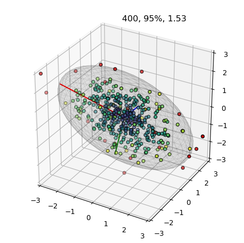
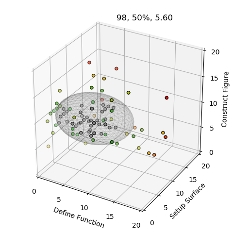
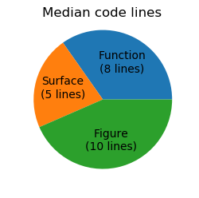

Percentile Visualization¶
The data points are colored using a colormap to indicate the percentile value of the data point from 0 to 95%. Values greater than 95% are indicated by red.
import numpy as np
import matplotlib.pyplot as plt
from matplotlib import cm
import s3dlib.surface as s3d
#.. Percentile Visualization
# 1. Define data to examine .........................................
np.random.seed(1)
def get_correlated_dataset(n, dependency, mu, scale):
latent = np.random.randn(n, 3)
dependent = latent.dot(dependency)
scaled = dependent * scale
scaled_with_offset = scaled + mu
# return x y z of the new, correlated dataset
return scaled_with_offset[:, 0], scaled_with_offset[:, 1], scaled_with_offset[:, 2]
corr = np.array([ [0.85, -.15, 0.4], [-0.35, -0.65, 0.7], [-.4, 0.6, 1.0] ])
mu = 0,0,0
sigma = 1.35, 0.56 , 0.68
N = 400
x,y,z = get_correlated_dataset(N, corr, mu, sigma)
data = np.transpose([ x,y,z ])
# 2. Setup and map surfaces .........................................
prct = 0.95
surface = s3d.SphericalSurface(3, color=[0,0,0,0.05], linewidth=.5 )
disArr_a,t = surface.svd(data, prct)
surface.shade()
info = str(N) +', '+"{:.0%}".format(prct) + ', ' + '{:04.2f}'.format( t[0] )
colors_a = []
colorMap = cm.get_cmap('viridis')
for val in disArr_a :
if val > 1 : colors_a.append([0.8,0,0])
else : colors_a.append(colorMap(val))
# 3. Construct figures, add surfaces, and plot .......................
fig = plt.figure(figsize=plt.figaspect(1))
ax = plt.axes(projection='3d')
ax.set(xlim=[-3,3], ylim=[-3,3], zlim=[-3,3] )
ax.set_title(info, horizontalalignment='left')
ax.scatter(x,y,z, c=colors_a, edgecolor='k')
ax.add_collection3d(surface.get_transformAxis())
ax.add_collection(surface)
fig.tight_layout()
plt.show()
The following plot is similar to the above, but now a colormap is used to indicate the percentile value of the data point above 50% to 100%. Values below 50% are indicated by grey.
The input csv file for this plot is a Nx3 data set representing the number of code lines used to create the example surface plots (for demo purposes, two large data sets and animations were not included). An alternative comparison of the ‘median’ values is simply a pie chart:
import numpy as np
import matplotlib.pyplot as plt
import s3dlib.surface as s3d
import s3dlib.cmap_utilities as cmu
#.. Percentile Visualization, 2
# 1. Define data to examine .........................................
data = np.loadtxt(open("data/example_stats.csv", "rb"), delimiter=",", skiprows=1)
xa,ya,za = np.transpose(data)
N = len(xa)
# 2. Setup and map surfaces .........................................
colormap=cmu.hsv_cmap_gradient( [0.333,1,.65], [0,1,1], smooth=1.6 )
grey = [.5,.5,.5]
prct = 0.5
surface = s3d.SphericalSurface(3, color=grey)
surface.set_surface_alpha(.05).shade()
disArr_a,t = surface.svd(data,prct)
info = str(N) +', '+"{:.0%}".format(prct) + ', ' + '{:04.2f}'.format( t[0] )
maxdis = max(disArr_a)
colors_a = []
for val in disArr_a :
if val < 1 : colors_a.append(grey)
else : colors_a.append(colormap( (val-1)/(maxdis-1) ) )
# 3. Construct figures, add dasurfaces, and plot ....................
minmax,ticks = (0,20), [0,5,10,15,20]
fig = plt.figure(figsize=plt.figaspect(1))
ax = plt.axes(projection='3d')
ax.set(xlim=minmax, ylim=minmax, zlim=minmax)
ax.set_xlabel('Define Function')
ax.set_ylabel('Setup Surface')
ax.set_zlabel('Construct Figure')
ax.set_xticks(ticks)
ax.set_yticks(ticks)
ax.set_zticks(ticks)
ax.set_title(info, horizontalalignment='left')
ax.scatter(xa,ya,za, c=colors_a, edgecolor='k')
ax.add_collection3d(surface)
fig.tight_layout()
plt.show()